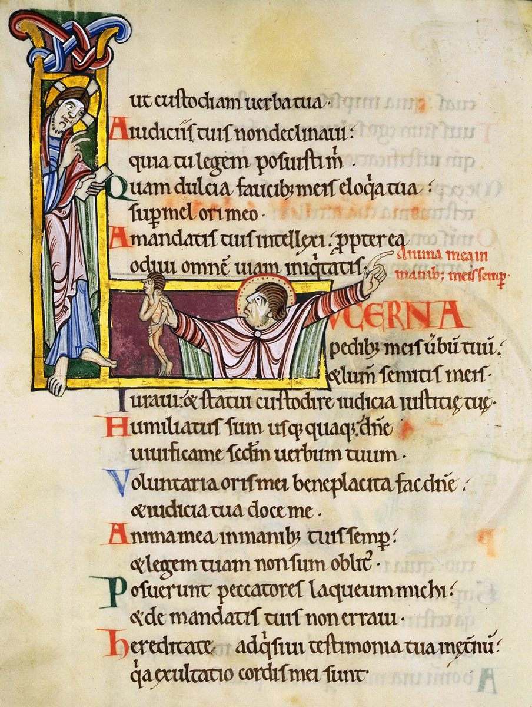

Salmo 119 — La Traducción Mister

La inicial L de Lucerna pedibus meis verbum tuum, «Lámpara es a mis pies tu palabra», el versículo 105, que la Biblia latina cuenta como Salmo 118. La imagen ilustra también el versículo 109: el hombre sostiene en la mano una figura pequeña, su alma, y señala la línea roja anima mea in manibus meis semper, «mi alma está siempre en mis manos»; la columna del texto lee in manibus tuis, «en tus manos».

Notas del traductor — versículo por versículo
La forma. El Salmo 119 tiene 176 versículos, más que cualquier otro capítulo de la Biblia; el siguiente más largo, Números 7 (ya en estas páginas), tiene 89. Es un alfabeto: veintidós estrofas de ocho versículos, una por cada letra del alfabeto hebreo, y cada versículo de una estrofa empieza con la letra de esa estrofa, marcada al comienzo de cada versículo. Cada nota de esta página trata una estrofa.
Ocho palabras. Casi cada versículo nombra lo que Dios ha dicho, y el salmo tiene ocho palabras para ello, que aquí se mantienen separadas como el hebreo las mantiene: torá, «ley»; edot, «testimonios»; piqudim, «preceptos»; juqim, «estatutos»; mitsvot, «mandamientos»; mishpatim, «ordenanzas», la palabra usada para estas leyes en Deuteronomio; davar, «palabra»; e imrá, «dicho». Leído versículo por versículo, «ley» está en 25 versículos del salmo, «testimonios» en 23, «preceptos» en 21, «estatutos» y «mandamientos» en 22 cada uno, y «dicho» en 19. Cuatro versículos no nombran ninguna de las ocho (3, 37, 90 y 122); tres de ellos hablan en cambio de sus «caminos» o de su «fidelidad». Torá significa instrucción, la enseñanza de un padre tanto como la sentencia de un tribunal; los Salmos en estas páginas la vierten «ley», como en «en la ley de Jehová está su deleite» (Salmo 1:2, ya en estas páginas).
Felices, intachables. «Felices los de camino intachable, los que andan en la ley de Jehová»: el salmo abre como abre el Salterio, «Feliz el hombre que no anda en el consejo de los malvados» (Salmo 1:1), con ashré y el verbo «andar»; los intachables son los temimim, los enteros. La RV60 tiene «Bienaventurados los perfectos de camino»; la Douay inglesa imprime el nombre de la letra en el texto, «ALEPH. Blessed are the undefiled in the way», como hace el griego. La TNM 1987 conserva una palabra española distinta para cada una de las ocho, «ley», «recordatorios», «órdenes», «disposiciones reglamentarias», «mandamientos», «decisiones judiciales», «palabra», «dicho». La NVI las deja solaparse: su versículo 2 dice «Dichosos los que obedecen sus mandatos», con «mandatos» donde el hebreo tiene testimonios.
Un tesoro en el corazón. «¿Cómo mantendrá limpio el joven su sendero? Guardándolo conforme a tu palabra»: yezaké, hacer limpio. «En mi corazón he atesorado tu dicho, para no pecar contra ti»: tsafanti, esconder como un tesoro, y el primer imrá del salmo, puesto junto al davar del versículo 9. Es el propio mandato de la ley, «estas palabras que yo te mando hoy estarán sobre tu corazón» (Deuteronomio 6:6, ya en estas páginas), cumplido. «En tus preceptos meditaré»: asijá, de siaj, hablarse algo a uno mismo, un verbo distinto del hagá del Salmo 1:2. La TNM 1987 tiene «En mi corazón he guardado cual tesoro tu dicho»; la RV60 «En mi corazón he guardado tus dichos, Para no pecar contra ti»; la NVI «En mi corazón atesoro tus dichos»; la RV 1909 «¿Con qué limpiará el joven su camino?».
Un forastero. «Descubre mis ojos, para que mire las maravillas de tu ley»: gal, descubrir, como se corre un velo. «Forastero soy en la tierra; no escondas de mí tus mandamientos»: el guer es el forastero residente, la palabra de Abraham sobre sí mismo en Hebrón, «Soy residente forastero y advenedizo entre ustedes» (Génesis 23:4, ya en estas páginas). «Rueda de sobre mí el oprobio y el desprecio»: gal mealái, de galal, rodar, las letras del «descubre» del versículo 18 puestas a un segundo uso. «También tus testimonios son mi delicia, los hombres de mi consejo»: shaashuái, mi delicia, que vuelve en los versículos 77, 92, 143 y 174. La RV60 tiene «Forastero soy yo en la tierra»; la RV 1909 «Advenedizo soy yo en la tierra»; la TNM 1987 «Solamente soy residente forastero en la tierra» y «como hombres de mi consejo»; la Douay inglesa «For thy testimonies are my meditation».
Dame vida. «Mi alma está pegada al polvo; dame vida conforme a tu palabra»: daveqá, el verbo del hombre que se une a su mujer (Génesis 2:24, ya en estas páginas), aquí pegado al suelo; y jayeni, «dame vida», la oración que el salmo hace nueve veces (versículos 25, 37, 40, 88, 107, 149, 154, 156, 159). «Mi alma se deshace en gotas de tristeza»: dalefá, gotear o filtrarse; el griego leyó «mi alma dormitó», y por eso la Douay inglesa tiene «My soul hath slumbered through heaviness». «Correré por el camino de tus mandamientos, porque tú ensanchas mi corazón»: tarjiv, la raíz de la anchura, que vuelve en el «lugar espacioso» del versículo 45 y en el «sumamente espacioso» del versículo 96. La RV60 tiene «Se deshace mi alma de ansiedad»; la TNM 1987 «Mi alma se ha desvelado de desconsuelo»; la RV 1909 «Cuando ensanchares mi corazón»; la NVI «porque me has dado mayor entendimiento».
Enséñame. «Enséñame, Jehová, el camino de tus estatutos, y lo custodiaré hasta el fin»: horeni, de yará, señalar el camino, la raíz de la torá misma. La mayoría de los versículos de esta estrofa empiezan con un verbo causativo, una petición de que Dios haga que algo suceda: hazme entender, hazme andar, inclina, aparta, haz cumplir. «Inclina mi corazón a tus testimonios, y no a la ganancia»: betsa, el provecho, a menudo el provecho tomado por la fuerza. «Aparta mis ojos de mirar lo vano»: shav, lo vacío, lo que no vale. La TNM 1987 tiene «Instrúyeme, oh Jehová, en el camino de tus disposiciones reglamentarias» y «y no a las ganancias»; la RV60 «Inclina mi corazón a tus testimonios, Y no a la avaricia».
Y, y, y. Pocas palabras hebreas empiezan con vav, y aquí cada versículo empieza con la conjunción misma, «y»; esta traducción conserva la «y» al frente de cada línea. «Y andaré en lugar espacioso, porque he buscado tus preceptos»: barejavá, la anchura del versículo 32 otra vez, espacio para moverse. «Y hablaré de tus testimonios delante de reyes, y no seré avergonzado». «Y alzaré mis manos a tus mandamientos»: el gesto de la oración vuelto hacia las palabras. «Y vengan a mí tus actos de amor leal»: jasadeja, el plural de jésed. La RV60 tiene «Y andaré en libertad»; la TNM 1987 «andaré de acá para allá en un lugar espacioso»; la RV 1909 «Y andaré en anchura».
Acordarse. La estrofa gira en torno a zajar, acordarse: «Acuérdate de la palabra dada a tu siervo» (49), «Me he acordado de tus ordenanzas desde la antigüedad» (52), «En la noche me he acordado de tu nombre» (55). «Este es mi consuelo en mi aflicción: que tu dicho me ha dado vida». «Tus estatutos han sido mis cantos en la casa de mis peregrinaciones»: megurái, mis peregrinaciones, la palabra de Jacob al faraón, «Los días de los años de mis peregrinaciones son ciento treinta años» (Génesis 47:9, ya en estas páginas). «Una ira ardiente se ha apoderado de mí»: zalafá, un viento abrasador. La RV 1909 tiene «Cánticos me fueron tus estatutos En la mansión de mis peregrinaciones»; la TNM 1987 «en la casa de mis residencias como forastero»; la NVI «donde vivo como extranjero».
Mi porción. «Jehová es mi porción; he dicho que guardaré tus palabras»: jelquí, mi parte, lo que Jehová dijo a Aarón, «Yo soy tu parte y tu heredad entre los hijos de Israel» (Números 18:20, ya en estas páginas). «He buscado tu favor con todo el corazón»: jiliti faneja, literalmente «he ablandado tu rostro», el verbo de «Moisés imploró a Jehová su Dios» después del becerro de oro (Éxodo 32:11, ya en estas páginas). «A medianoche me levanto para darte gracias». «De tu amor leal, Jehová, está llena la tierra». La TNM 1987 tiene «Jehová es la parte que me corresponde» y «He ablandado tu rostro»; la RV60 «Tu presencia supliqué de todo corazón», y «A medianoche me levanto para alabarte».
Bueno. Cinco de los ocho versículos empiezan con tov, «bueno» (65, 66, 68, 71, 72). «Enséñame buen juicio y conocimiento»: tuv taam, el taam de «Gusten y vean» en el Salmo 34 (ya en estas páginas). «Antes de ser afligido andaba descarriado … Bueno fue para mí ser afligido, para que aprendiera tus estatutos»: ʿiná, el verbo del «para humillarte, para probarte» de Deuteronomio en el desierto (Deuteronomio 8:2, ya en estas páginas). «Su corazón está embotado como la grasa»: tafash, grueso, insensible; el griego tiene «su corazón se cuajó como la leche», y la Douay inglesa lo sigue, «Their heart is curdled like milk». La RV 1909 tiene «Engrasóse el corazón de ellos como sebo»; la RV60 «Enséñame buen sentido y sabiduría»; la RV60 también «Bueno me es haber sido humillado».
Hecho y establecido. «Tus manos me hicieron y me establecieron»: ʿasuni vaijonenuni, la pareja del Cántico de Moisés, «Él te hizo, y te estableció» (Deuteronomio 32:6, ya en estas páginas). «Sé, Jehová, que tus ordenanzas son justas, y que con fidelidad me afligiste». En el versículo 79 el texto escrito tiene veyedú, «y conocerán tus testimonios», y la lectura al margen, que aquí se sigue, es veyodeé, «y los que conocen tus testimonios». «Sea mi corazón intachable en tus estatutos»: tamim, la palabra del versículo 1. La RV60 tiene «Tus manos me hicieron y me formaron», y en el versículo 79 «Y conocen tus testimonios»; la TNM 1987 la lectura al margen, «los que también conocen tus recordatorios».
Desfallecer y acabar. «Mi alma desfallece de anhelo por tu salvación … Mis ojos desfallecen de anhelo por tu dicho»: kaletá, kalú, llegar a su fin, gastado por la espera; y el versículo 87 vuelve la misma raíz hacia los enemigos, «Casi acabaron conmigo». «Porque he llegado a ser como un odre al humo»: un odre colgado sobre el fuego, ennegrecido y arrugado; el griego tiene «como un odre en la escarcha», y la Douay inglesa «like a bottle in the frost». «¿Cuántos son los días de tu siervo?»: una vida demasiado corta para esperar mucho más. La RV60 tiene «Porque estoy como el odre al humo»; la TNM 1987 «Porque me he hecho como un odre en el humo»; la NVI «Parezco un odre ennegrecido por el humo».
Estar firme. «Para siempre, Jehová, tu palabra está firme en los cielos»: nitsav, apostada, puesta en su lugar; «afirmaste la tierra, y permanece. Por tus ordenanzas permanecen hasta hoy, porque todas las cosas son tus siervas»: el cielo y la tierra aparecen como siervos de guardia. «Si tu ley no hubiera sido mi delicia, ya habría perecido en mi aflicción». «A toda perfección he visto un límite; tu mandamiento es sumamente espacioso»: tiklá, «perfección», es un sustantivo que se halla en un versículo de la Biblia hebrea, este, y su sentido se conjetura por su raíz, «acabar»; y «espacioso» es la raíz de los versículos 32 y 45, por tercera vez. La RV60 tiene «Para siempre, oh Jehová, Permanece tu palabra en los cielos» y «Amplio sobremanera es tu mandamiento»; la NVI «¡solo tus mandamientos son infinitos!»; la Douay inglesa «I have seen an end to all persecution».
Amor y dulzura. «¡Cuánto amo tu ley! Todo el día es mi meditación»: sijatí, mi meditación, el sustantivo del verbo del versículo 15. Siguen tres comparaciones: más sabio que mis enemigos, más perspicacia que todos mis maestros, más entendimiento que los ancianos. «¡Qué dulce es tu dicho a mi paladar, más que la miel a mi boca!»: nimletsú, «dulce», está en un versículo de la Biblia hebrea, y el «dulce» del griego es la conjetura habitual; el griego añade además el panal. La RV60 tiene «¡Oh, cuánto amo yo tu ley! Todo el día es ella mi meditación» y «¡Cuán dulces son a mi paladar tus palabras!»; la TNM 1987 «¡Cuán suaves a mi paladar han sido tus dichos»; la NVI «Tengo más discernimiento que todos mis maestros».
Una lámpara. «Lámpara es a mi pie tu palabra, y luz para mi sendero»: ner leraglí, una pequeña lámpara de barro, luz suficiente para el paso siguiente, y «pie» está en singular en el hebreo. «Acepta, te ruego, las ofrendas voluntarias de mi boca»: palabras ofrecidas como se ofrece un sacrificio. «Mi vida está de continuo en mi palma»: llevar la vida en la palma es arriesgarla, como dice Jefté, «puse mi vida en mi palma y pasé contra los hijos de Amón» (Jueces 12:3, ya en estas páginas). «He inclinado mi corazón a cumplir tus estatutos, para siempre, hasta el fin»: ʿeqev, el «fin» del versículo 33. La RV60 tiene «Lámpara es a mis pies tu palabra, Y lumbrera a mi camino»; la TNM 1987 «Tu palabra es una lámpara para mi pie»; la RV 1909 «De continuo está mi alma en mi mano»; la NVI «Mi vida pende de un hilo».
Dos ánimos. «Aborrezco a los de ánimo dividido, pero amo tu ley»: seʿafim está en dos versículos de la Biblia hebrea, aquí y en la pregunta de Elías en el Carmelo, hasta cuándo cojeará el pueblo entre dos opiniones (1 Reyes 18:21). «Mi escondite y mi escudo eres tú»: el séter de «El que se sienta en el escondite del Altísimo» (Salmo 91:1, ya en estas páginas). «Como escoria has hecho cesar a todos los malvados de la tierra»: siguim, la espuma que se quita de la plata fundida, el «Tu plata se ha vuelto escoria» de Isaías (Isaías 1:22, ya en estas páginas); el griego lee «tuve a todos los pecadores de la tierra por transgresores», y la Douay inglesa «I have accounted all the sinners of the earth prevaricators». «Mi carne se eriza por temor de ti»: el griego «clava mi carne», la Douay inglesa «Pierce thou my flesh with thy fear». La RV60 tiene «Aborrezco a los hombres hipócritas»; la RV 1909 «Los pensamientos vanos aborrezco»; la TNM 1987 «A los de corazón irresoluto he odiado».
Un fiador. «Sé fiador de tu siervo para bien; no dejes que me opriman los soberbios»: ʿarov, salir por fiador, la promesa de Judá por Benjamín, «Yo mismo saldré por fiador de él» (Génesis 43:9, ya en estas páginas). Es uno de los cuatro versículos que no nombran ninguna de las ocho palabras; pide una persona, no una sentencia. «Tiempo es de que actúe Jehová; han quebrantado tu ley»: heferú, romper un pacto o anular un voto. «Por eso amo tus mandamientos más que el oro, más que el oro fino». En el versículo 128 el hebreo tiene «todos los preceptos sobre todas las cosas», sin «tus». La RV 1909 tiene «Responde por tu siervo para bien»; la RV60 «Tiempo es de actuar, oh Jehová, Porque han invalidado tu ley»; la TNM 1987 «Es el tiempo para que Jehová obre»; la NVI «Garantiza el bienestar de tu siervo».
Una apertura. «La apertura de tus palabras alumbra; da entendimiento a los sencillos»: pétaj, una puerta, una abertura; y los petaím son los sencillos, los no instruidos, para quienes está escrito Proverbios, «para dar sagacidad a los sencillos» (Proverbios 1:4, ya en estas páginas). «Abrí mi boca de par en par y jadeé, porque anhelaba tus mandamientos». «Haz resplandecer tu rostro sobre tu siervo»: la bendición de los sacerdotes, «Jehová haga resplandecer su rostro sobre ti» (Números 6:25, ya en estas páginas), pedida para una sola persona. «Arroyos de agua bajan de mis ojos, porque no guardan tu ley». La RV60 tiene «La exposición de tus palabras alumbra»; la RV 1909 «El principio de tus palabras alumbra»; la TNM 1987 «La manifestación misma de tus palabras da luz»; la Douay inglesa «The declaration of thy words giveth light»; la NVI «Ríos de lágrimas brotan de mis ojos».
Justo. La letra de la estrofa empieza tsadiq, justo, y la raíz está cinco veces en ella: «Justo eres tú, Jehová» (137), «con justicia» (138), «Tu justicia es justicia para siempre» (142), «Justos son tus testimonios para siempre» (144). «Mi celo me ha consumido»: tsimetatni, un verbo distinto del de «El celo por tu casa me consumirá» (Juan 2:17, ya en estas páginas, que cita el Salmo 69:10). «Tu dicho está muy refinado»: tserufá, fundido, sin escoria. «Pequeño soy y despreciado». La RV60 tiene «Mi celo me ha consumido» y «Sumamente pura es tu palabra»; la TNM 1987 «Mi ardor me ha acabado» y «Tu dicho es muy refinado»; la NVI «Mi celo me consume».
Cerca y cerca. «He clamado con todo el corazón … A ti he clamado»: qaratí, dos veces. «Me adelanto al alba y clamo por ayuda … Mis ojos se adelantan a las vigilias de la noche»: qidamtí, qidmú, ir por delante, en pie antes del crepúsculo y antes de cada vigilia de la noche. Luego la raíz qarav, cerca, dos veces: «Se acercan los que persiguen la intriga» (150), y «Cercano estás tú, Jehová» (151). La intriga es zimá, de la raíz de zamam, tramar. La RV60 tiene «Me anticipé al alba, y clamé» y «Cercano estás tú, oh Jehová, Y todos tus mandamientos son verdad»; la RV 1909 «Anticipéme al alba, y clamé»; la TNM 1987 «Me he levantado temprano en el crepúsculo matutino».
La cabeza de tu palabra. «Mira mi aflicción y líbrame» (153); «Mira cómo amo tus preceptos» (159); «He visto a los traidores» (158): la letra de la estrofa empieza reé, mira. «Defiende mi causa y redímeme»: rivá riví, pleitea mi pleito, y guealeni, el verbo del goel. «Dame vida» viene tres veces aquí (154, 156, 159). «La suma de tu palabra es verdad»: rosh, la cabeza, puede significar la suma de una cuenta o el principio de una cosa, y el estante se divide. La RV60 tiene «La suma de tu palabra es verdad»; la RV 1909 «El principio de tu palabra es verdad»; la Douay inglesa, con el griego, «The beginning of thy words is truth»; la TNM 1987 «La sustancia de tu palabra es verdad».
Siete veces. La letra se escribe igual para sin y para shin, y la estrofa usa las dos: sarim, príncipes (161), sas, me gozo (162), y sheqer, mentira (163). «Me gozo en tu dicho como quien halla gran botín». «Siete veces al día te alabo por tus justas ordenanzas»: la Regla de san Benito (capítulo 16) funda en este versículo, en su latín, las siete horas diurnas de la oración monástica, según se refiere, sin comprobarse aquí. «Mucha paz tienen los que aman tu ley, y no hay tropiezo para ellos»: mijshol, el obstáculo de «ni pondrás tropiezo delante del ciego» (Levítico 19:14, ya en estas páginas). La RV60 tiene «Siete veces al día te alabo» y «Mucha paz tienen los que aman tu ley»; la TNM 1987 «y no hay para ellos tropiezo»; la NVI «y nada los hace tropezar».
Una oveja perdida. «Llegue mi clamor de júbilo delante de ti»: rinatí, un grito, de alegría o de necesidad. «Derramen mis labios alabanza»: tabaʿná, brotar como un manantial. El salmo no termina ni en triunfo ni en reposo: «Me he descarriado como oveja perdida; busca a tu siervo, porque no he olvidado tus mandamientos». Taʿití, me he descarriado, es el verbo de «Todos nosotros como ovejas nos extraviamos» (Isaías 53:6, ya en estas páginas), y el pastor que va «tras la perdida hasta que la encuentra» es el de Lucas 15:4 (ya en estas páginas). Después de 175 versículos de amar la ley, la última palabra es que el que ama sigue perdido, y sigue acordándose. La RV60 tiene «Yo anduve errante como oveja extraviada; busca a tu siervo»; la TNM 1987 «He andado errante como una oveja perdida» y «Que mis labios hagan salir burbujeando alabanza»; la RV60 «Mis labios rebosarán alabanza».
Patrones que conviene seguir
Donde esta traducción mantiene las palabras exactas y distintas: las ocho palabras, cada una con su propio español en todo el salmo: «ley» (torá), «testimonios» (edot), «preceptos» (piqudim, como en el Salmo 103:18), «estatutos» (juqim), «mandamientos» (mitsvot), «ordenanzas» (mishpatim, como en Deuteronomio), «palabra» (davar) y «dicho» (imrá); «guardar» para shamar y «custodiar» para natsar; «dame vida» para jayeni, nueve veces; «meditar» para siaj; «mi delicia» para shaashuái; «espacioso» y «ensanchar» para la raíz de la anchura en los versículos 32, 45 y 96; y cada línea de la estrofa de vav empezando con «y».
Ecos pagados. La apertura del Salmo 1; las palabras sobre el corazón de Deuteronomio 6; Abraham el residente forastero (Génesis 23) y las peregrinaciones de Jacob (Génesis 47); el unirse de Génesis 2:24; la porción de Aarón (Números 18); Moisés implorando (Éxodo 32); la humillación en el desierto (Deuteronomio 8); «Él te hizo, y te estableció» (Deuteronomio 32); la vida de Jefté en su palma (Jueces 12); el escondite del Salmo 91; la escoria de Isaías; Judá el fiador (Génesis 43); la bendición de los sacerdotes (Números 6); el tropiezo de Levítico 19; las ovejas extraviadas de Isaías 53 y el pastor de Lucas 15; y el taam del Salmo 34.
Ecos sembrados. Las dos opiniones de Elías (1 Reyes 18:21) y el celo del Salmo 69:10; ninguno está todavía en estas páginas.
⚠ Nota sobre el orden: los Salmos están en estas páginas en el 1, 23, 27, 34, 37, 46, 51, 56, 91, 100, 103, 119, 121 y 139, elegidos por lo mucho que se leen y no en orden. El hilo secuencial sigue igual: lo siguiente en orden es el Salmo 2.